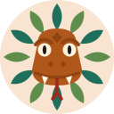

Visita en curso · grupal con guía · inicio 17:20
El Castillo y la Gran Plaza

Balam · Ana López Martínez (tú) · Visitante
Estás en Juego de Pelota, etapa 4 del sacbé
- Progreso
- 50 % 2 de 4 zonas visitadas
- Tiempo transcurrido
- 22 de 45 min Quedan 23 min · fin 18:05
- Zonas visitadas
- 2 de 4
- Participantes
- 6 5 conectados · 1 inactivo
- Reputación del guía
- 4.8 / 5 126 visitas guiadas
Tu sacbé
Recorrido libre: puedes ir a cualquier etapa. Ábrela para consultar su ficha.
- Visitada
- Zona actual
- Pendiente
- Requiere rol Guía
-
Etapa 1 · Visitada Gran Plaza
 Muan · inactivo
Balam (tú)
Muan · inactivo
Balam (tú)
Explanada ceremonial alrededor de la cual se levantan los principales edificios del periodo Posclásico temprano.
Visitada a las 17:21 · 6 min
Volver a esta zonaDesvío fuera del recorrido Grupo de las Mil Columnas Requiere rol Guía
Gran espacio porticado al este de la Gran Plaza, donde cientos de columnas talladas con guerreros sostenían techos de madera y estuco. Columnatas que formaban galerías techadas para reuniones y actividades públicas.
Tu avatar tiene el rol Visitante: puedes consultar esta ficha, pero no entrar.
-
Etapa 2 · Visitada El Castillo
 Ixchel
Balam (tú)
Ixchel
Balam (tú)
Templo de Kukulcán: nueve cuerpos escalonados y 365 escalones, uno por cada día del año solar. En cada equinoccio la luz dibuja una serpiente sobre la escalinata.
Visitada a las 17:27 · 9 min
Volver a esta zona -
Etapa 3 · Pendiente Plataforma de Venus
Kuk · pidió ayuda
Balam (tú)
Plataforma con escalinatas en sus cuatro lados y relieves del planeta Venus, usada para danzas y ceremonias.
La saltaste: sigue pendiente y cuenta para tu progreso cuando la termines.
Ir a esta zona -
Etapa 4 · Estás aquí Juego de Pelota
Balam (tú)

Kan · GuíaItzel
Kan (Carlos KarKerKar, guía) está explicando la zona.
La mayor cancha de Mesoamérica, con anillos de piedra en lo alto de sus muros y relieves de jugadores. El guía explica aquí las reglas del gran Juego de Pelota.
Llegaste a las 17:36 · al terminarla tu progreso sube a 75 %
Saludaste al grupo. Kan, Itzel y los demás ven tu saludo junto a Balam. Demostración: no se envía nada. Cerrar
Fotografía tomada en el Juego de Pelota. Se guardaría en tu álbum de la visita. Demostración: no se guarda nada. Cerrar
Solicitud enviada a Kan (guía). Te avisará cuando pueda atenderte. Demostración: no se envía nada. Cerrar
Caminaste a la Gran Plaza. Mira tu marcador en la etapa 1. Demostración: al recargar vuelves al Juego de Pelota. Cerrar
Caminaste a El Castillo. Mira tu marcador en la etapa 2. Demostración: al recargar vuelves al Juego de Pelota. Cerrar
Caminaste a la Plataforma de Venus. Mira tu marcador en la etapa 3. Demostración: al recargar vuelves al Juego de Pelota. Cerrar